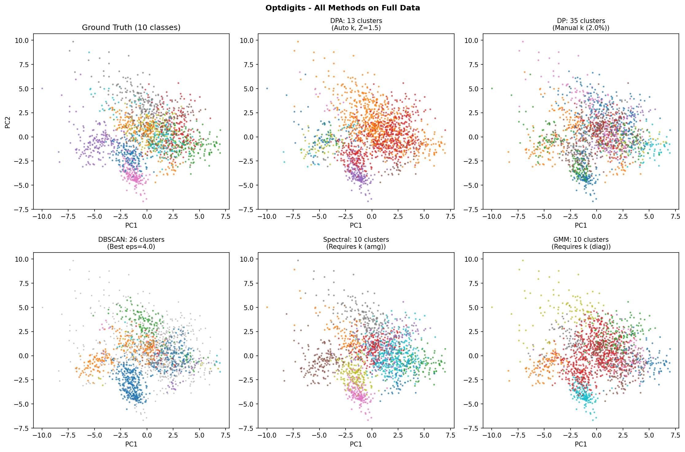
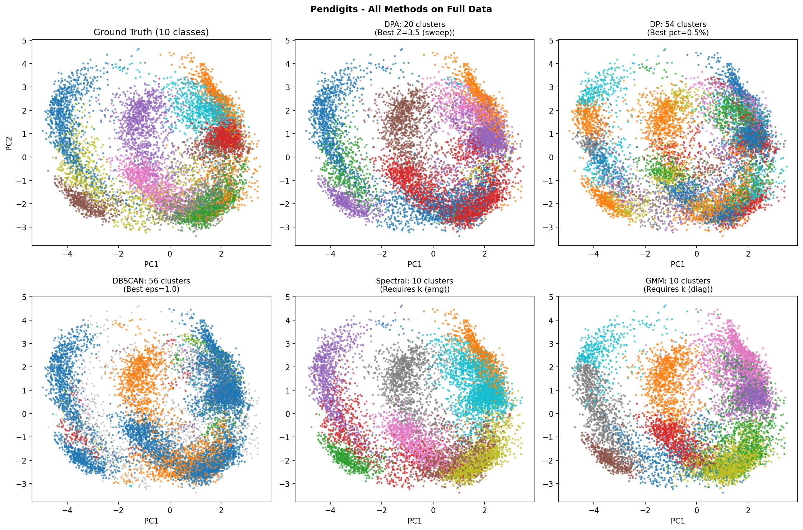
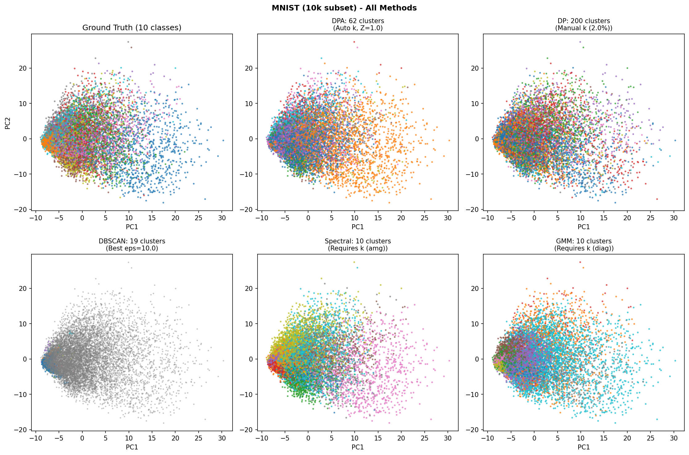
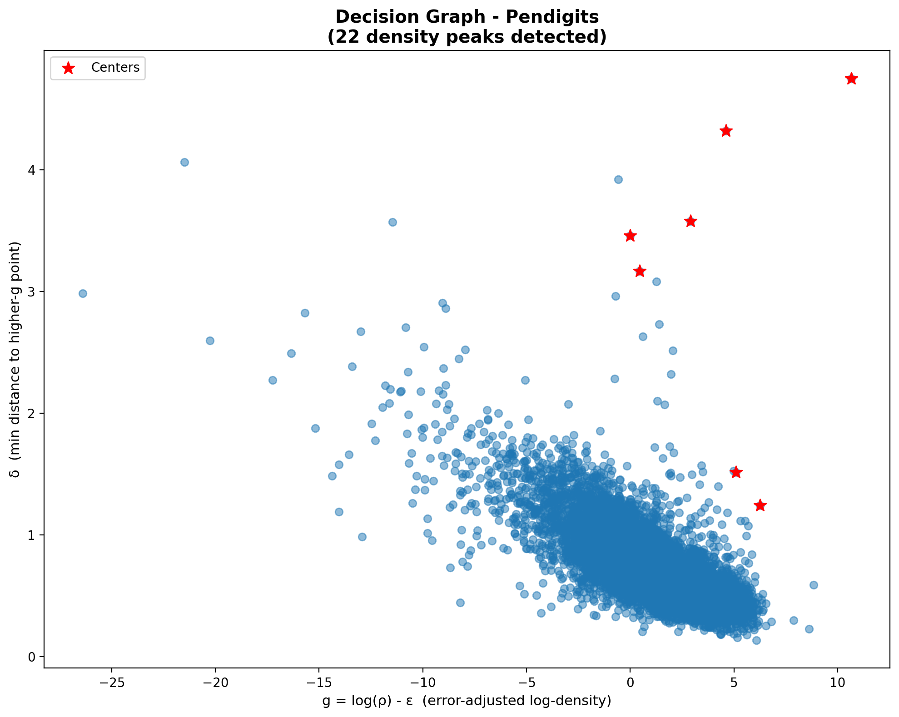
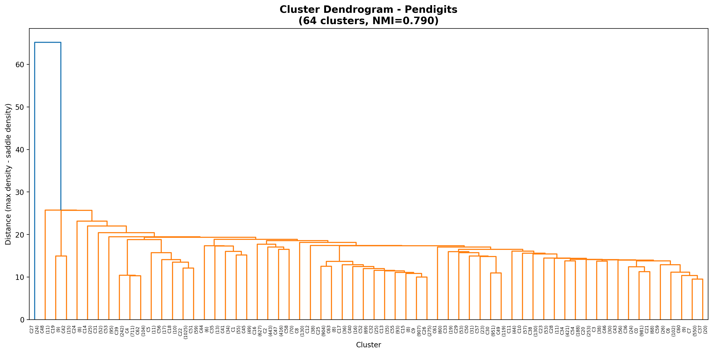

DPA
Density Peak Advanced Clustering
d'Errico, Facco, Laio & Rodriguez (2021)
Information Sciences
Unsupervised Learning Course
Francesca Craievich
Outline
- Motivation & Problem
- Understanding the Method
- TWO-NN (Intrinsic Dimension)
- PAk (Adaptive Density Estimation)
- Heuristics 1-3
- Hyperparameters & Limitations
- Comparison with Other Methods
- Results & Demo
The Problem
Standard Density Peaks (DP) Limitations
DP (Rodriguez & Laio, 2014):
- Manual center selection
- Fixed k-NN density
- No error quantification
- Manual cluster merging
DPA (2021) solves all:
- Automatic center detection
- Adaptive PAk density
- Fisher Information bounds
- Statistical merging (Z-score)
DPA Algorithm Overview
- Estimate intrinsic dimension d using TWO-NN
- Compute adaptive density ρ using PAk
- Find cluster centers (Heuristic 1)
- Find saddle points (Heuristic 2)
- Merge insignificant peaks (Heuristic 3)
- Assign points following density gradient
Key advantage: Only ONE parameter (Z)!
Understanding the Method
1. TWO-NN: Intrinsic Dimension
Estimates the intrinsic dimension d of the data manifold.
Why it matters:
- Optdigits: 64 features → d ≈ 8-9
- MNIST: 784 features → d ≈ 12-14
Understanding the Method
2. PAk: Adaptive Density Estimation
Finds optimal k for each point using Likelihood Ratio Test.
Error from Fisher Information:
ε = √(4(k̂+2) / ((k̂-1)·k̂))
Understanding the Method
3. The Three Heuristics
| Heuristic |
Purpose |
Criterion |
| H1 |
Find cluster centers |
δᵢ > rk̂ᵢ AND not in higher-g neighborhood |
| H2 |
Find saddle points |
Highest g among border points |
| H3 |
Merge peaks |
Z-test on peak height vs saddle |
g = log(ρ) - ε (error-adjusted density)
Hyperparameters
The Z Parameter
| Z |
Effect |
| 1.0 |
More clusters (liberal) |
| 2.0 |
Balanced (default) |
| 3.0 |
Fewer clusters (conservative) |
Hyperparameters
Z Sensitivity on Real Data
Optdigits (1797 samples, d=9, 10 true classes):
| Z |
1.0 |
1.5 |
2.0 |
2.5 |
3.0 |
| Clusters |
11 |
9 |
9 |
8 |
7 |
| NMI |
0.736 |
0.650 |
0.650 |
0.493 |
0.474 |
Pendigits (10992 samples, d=6, 10 true classes):
| Z |
1.0 |
1.5 |
2.0 |
2.5 |
3.0 |
| Clusters |
34 |
32 |
25 |
22 |
22 |
| NMI |
0.768 |
0.771 |
0.784 |
0.781 |
0.781 |
DPA finds more clusters than ground truth (sub-structure within digit classes)
Limitations
Weaknesses
- High dimensions (d > 15):
PAk estimation degrades
- Computation:
O(N × kmax × log N)
- Image data:
Needs Tangent Distance
- Uniform density:
No natural peaks
Mitigations
- Use lower Z for high-D
- FAISS for fast k-NN
- Tangent Distance built-in
- Check decision graph
Method Comparison
| Criterion |
DPA |
DP |
DBSCAN |
Spectral |
GMM |
| Auto k |
Yes (Z-test) |
No (manual) |
Unreliable |
No |
BIC |
| Parameters |
Z only |
k, threshold |
eps, min_pts |
k |
k, cov |
| Non-convex |
Yes |
Yes |
Yes |
Yes |
No |
| Error bounds |
Fisher Info |
None |
None |
None |
None |
| Topography |
Yes |
No |
No |
No |
No |
Numerical Results
| Dataset |
Metric |
DPA |
DP |
DBSCAN |
Spectral* |
GMM* |
Optdigits
(1797, d=9) |
NMI |
0.736 |
0.805 |
0.591 |
0.789 |
0.397 |
| ARI |
0.505 |
0.685 |
0.248 |
0.674 |
0.190 |
| k |
11 |
17 |
26 |
10 |
10 |
Pendigits
(10992, d=6) |
NMI |
0.781 |
0.748 |
0.706 |
0.820 |
0.593 |
| ARI |
0.657 |
0.492 |
0.549 |
0.680 |
0.432 |
| k |
20 |
54 |
56 |
10 |
10 |
MNIST 10k
(10000, d=14) |
NMI |
0.664† |
0.463 |
0.231 |
0.641 |
0.315 |
| ARI |
0.438† |
0.228 |
0.042 |
0.461 |
0.114 |
| k |
28† |
50 |
19 |
10 |
10 |
*Spectral/GMM receive true k=10 as input. DPA, DP, DBSCAN find k automatically.
†DPA+TD (with Tangent Distance)
Results: Optdigits

Results: Pendigits

Results: MNIST

DPA Topography


Conclusions
- DPA automates what DP required manually
- Single parameter Z with clear statistical meaning
- Error quantification via Fisher Information
- Topographic analysis for cluster interpretation
Thank You!
Questions?
Code: github.com/francescacraievich/Data-Topography-DPA